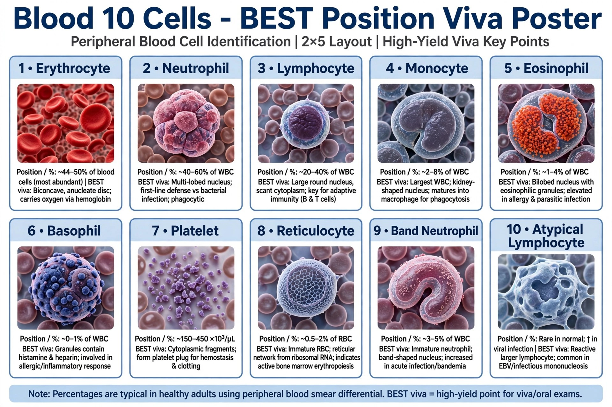

🔬 Applied Physiology Related to Blood Cells for MBBS Students DR SM, Physiologist, Bangladesh 🩸 10 Cells Identify + Function Puzzle📱 Mobile Ready

Can you identify all 10 blood cells by function?
5 normal WBCs + Platelet + 4 abnormal RBCs. Each question gives a clinical stem + real smear image. Tap image to zoom. +10 per correct, -0 per wrong. Aim 90+ for Blood Expert 🏆